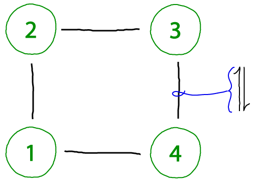
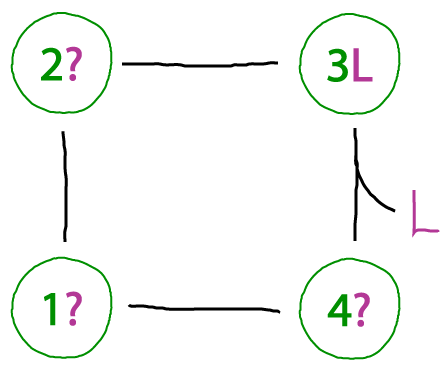
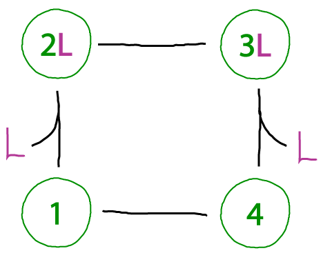
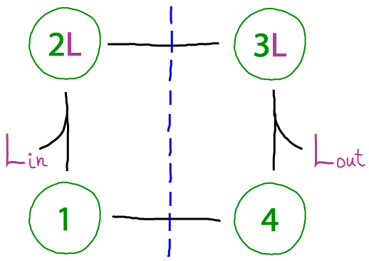
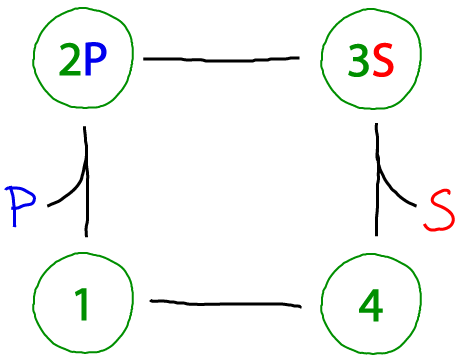
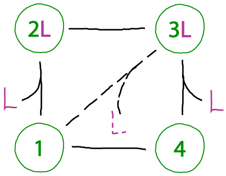

Drawing a cycle connecting a series of states is straightforward, but what are the key ingredients that make cycles interesting and useful? What features should we look for? We'll look through a set of cycles to identify key functional features - as well as warning signs for problematic cycles.
Read all the way through from the beginning to pick up the essential concepts.

In this cycle, each numbered circle represents the conformational state of some protein. It seems boring but we can learn important lessons already.
We want to be able to recognize when something essential is omitted from a cycle. In this case, the binding process occuring from state 4 to 3 - even though it's reversible - must be balanced by another unbinding process. To see this, imagine proceding counter-clockwise around the cycle from state "3L", which is state 3 of the protein with ligand L bound. One then gets, in sequence, states 2L, 1L, and 4L. But, unless our protein can bind an arbitrary number of ligands, it doesn't makes sense that state 4L binds another ligand: if it did, we would get 4L2, then 4L3 the next time around, and so on.Below, a possible corrected cycle with binding is shown.

This cycle lacks the problem we saw above. We can go around (and around) the cylce any way we want, and we'll end up in the same state. The states are well defined, and that's how a cycle should be.However, if the all the ligand is in the same compartment - i.e., all the L molecules are in one pool and can bind to either state 1 (yielding 2L) or state 4 (yielding 3L) - then this cycle cannot be driven in a particular direction. There is no way to favor binding of one state over the other based on the cycle shown. (It's possible some external process could favor state 1 over 4, but no such process in indicated in the cycle.)
In sum, this cycle exhibits no physical inconsistency but it cannot driven.

This cycle portrays a protein connecting two compartments (e.g., inside and outside an organelle), so that ligands must be classified as "in" or "out". The blue dashed line is meant to suggest that states on a given side of the line only allow binding with a single compartment, such as occurs in alternating access mechanisms utilized by transporter proteins. (Note that the numbered states do not indicate physical location - rather, the protein will be located at a membrane separating the compartments and change conformations according to the cycle.)The cycle is functional in the sense that it can be driven - made to move in a specified direction, whether clockwise or counter-clockwise. Once a cycle can be driven, it can be used to perform work - as transporters do. Functional machines like transporters require more elaborate state spaces and cycles, but the basic ideas are illustrated here.

The beauty of the catalytic cycle is that it can always be driven. The cycle above converts "substrate" S to "product" P - or the reverse, of course, depending on whether there is an excess of S or P. The term 'excess' is relative to the equilibrium state in which a system would have an equal probability to move clockwise as counter-clockwise. Excess P, for example, would drive the cycle clockwise.Compared to the standard Michaelis-Menten cycle, there are two differences here. Most obviously, our enzyme has an extra conformational state (which may be more realistic as many enzymes exhibit significantly different open and closed states - e.g., adenylate kinase). Secondly, as noted in our discussion of the first cycle above, all processes here are reversible. By contrast, the Michaelis-Menten cycle assumes the catalytic step is irreversible and only proceeds in a single direction. See further discussion of this point in the main cycles page and equilibrium page.

Not all cycles will function in an ideal fashion. A key issue of concern is "slippage," where states are connected by undesirable transitions or where undesirable states are accessible. The cycle above shows a toy example of slippage connecting two states not in our original model.In the cell, we can presume that such inefficiencies have evolved to be minimal - via low rate constants. Nevertheless, do not assume that simple models will account for every process occuring in nature!